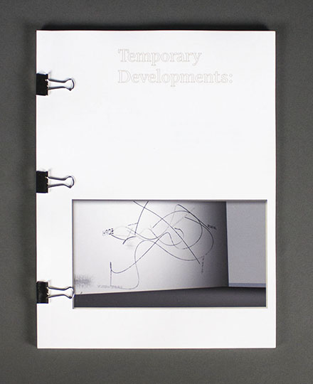
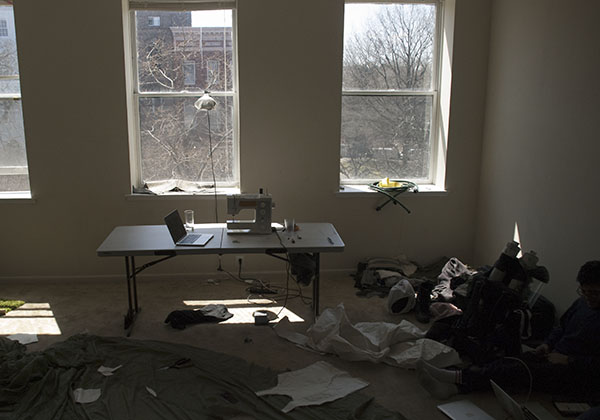

Temporary Developments serves as a catalogue for the branding philosophy in and around it's application. The publication contains both essays and short stories.

You can scroll through the publication below or view / download a digital version here.
You can view / download a digital copy of the publication here.